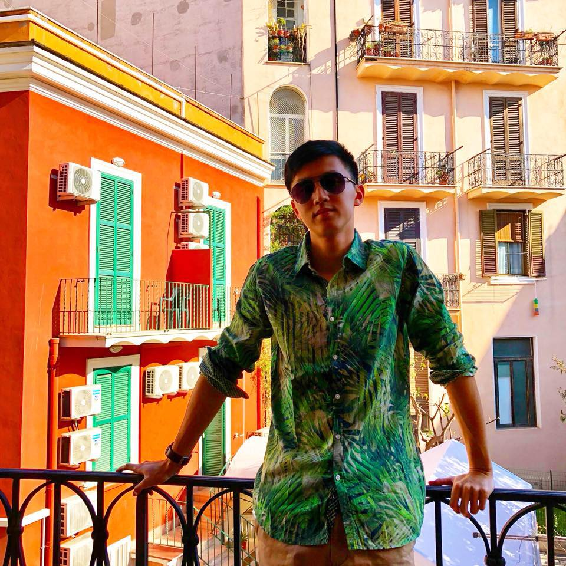

Profile
Hi, my name is Yung Cher, also known as Blake!
Modern Languages Student
I'm currently studying German and Spanish at Cambridge University. I absolutely love the breadth of the course, which allowed me to pursue my interests in topics such as German history, philosophy, as well as Latin American Literature. Although I do not intend to pursue a career directly related to languages, I feel that I have benefitted greatly from the wide range of topics I was exposed to during the course. Not only have I developed more robust critical thinking skills, I have also become more sure of my values and my identity.
Aspiring Entrepreneur
On my year abroad in Berlin, I was impressed and energised by the creativity, dynamism and passion of many young tech entrepreners. After identifying a promising problem to solve, I've become inspired to found my own business after I graduate from university.
Amateur Web Developer
My desire to acquire the technical skills to build a scalable web app led me to pursue a fullstack web development bootcamp at Le Wagon Singapore, where I'm currently at. So far, the course has been phenomenal! After three weeks of intensive coding and frustrating debugging, I'm amazed not only by the progress I made in class, but also how much I actually looked forward to going to class and solving coding challenges every day. I hope to continue to hone my skills by working on new projects and levelling up my coding skills after the end of the bootcamp.
Occasional Adventurer
I'm an adrenaline junkie, always seeking my next adventure! Usually, travelling to foreign places is enough to satisfy my appetite for adventure. But occasionally, I have resorted to measures such as paragliding, skiing or even both together at the same time!
Critical Theorist
After coming across Critical Theory while studying postwar German thought in university, I was fascinated by the work carried out by its practitioners from the Frankfurt School. If all of that sounds foreign to you, just know that I hope to change the world for the better by attempting to critique it.
Education
University of Cambridge 🇬🇧
BA German and Spanish
Le Wagon Singapore 🇸🇬
Fullstack Web Development Course
Raffles Institution, Singapore 🇸🇬
High School
Work Experience
ProChile Berlin 🇩🇪
Internship
Consulate of Singapore in Dubai 🇦🇪
Internship
Singapore Army 🇸🇬
National Service
Download my life in black and white: CV (English)Lebenslauf (Deutsch)
Values
Why have I decided to include this page? I believe that intrinsic values are just as important, if not more than other sources of identity like interests, achievements and social circles. I have listed the most important values that I believe in and aspire to embody.